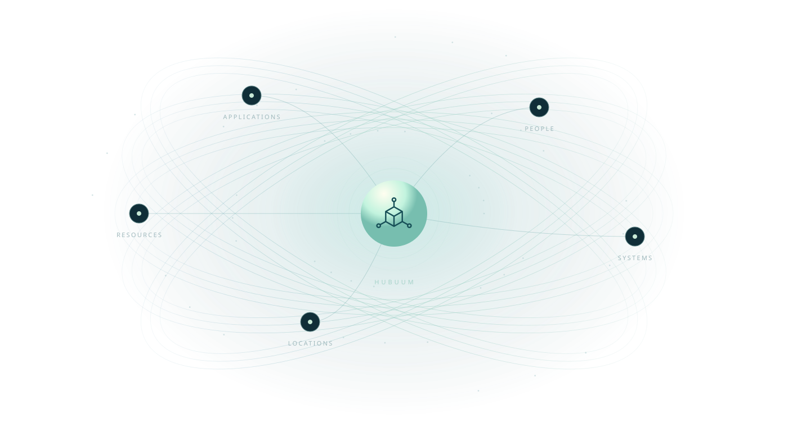
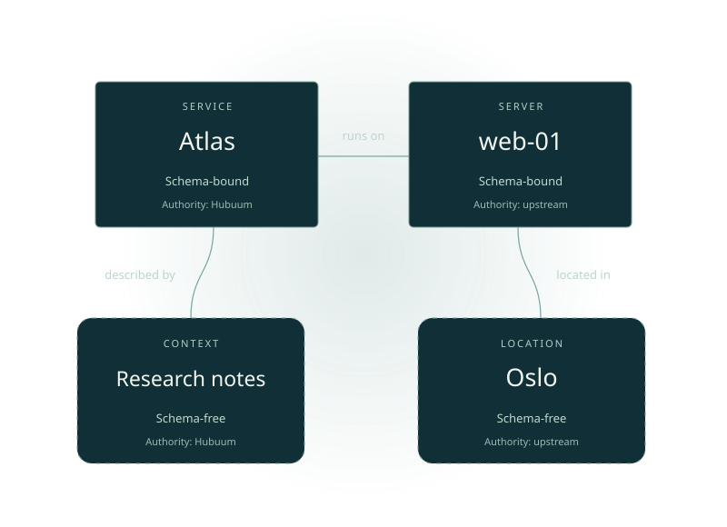

Your model, as it evolves.
Define your own resource types and relationships. Add schemas where you need them, and evolve the structure as your understanding grows.
Open-source resource inventory
Your resources are part of a bigger picture. Hubuum gives their data a common home, and their connections a language.

An application. The servers behind it. The team that keeps it running.
Each system holds part of the picture. Hubuum brings those facts into a model you define, so people and applications can work with their shared context.
Keep using the systems that own your data. Your integrations decide what to bring into Hubuum and how to keep it current.
Describe what you have.
Understand how it fits together.

An example resource model · shaped by youDefine classes for the things you manage. Store their data as JSON, with optional schema validation when consistency matters.
Connect an application to its servers, a server to its location, and a service to its owner. Build a picture that crosses system boundaries.
Search your inventory, build integrations, and give people access through collections and permissions. Work in the browser, terminal, or your own application.
Start with a small model.
Give it room to grow.
Define your own resource types and relationships. Add schemas where you need them, and evolve the structure as your understanding grows.
Organise resources in collections and control who can work with them. Give people and service accounts access that fits their responsibilities.
Search, import, export, and build on a consistent API. Use history and audit events to understand how your inventory changes.
A common foundation for the people who run it,
the people who use it, and the things you build.
Open source. Open possibilities.